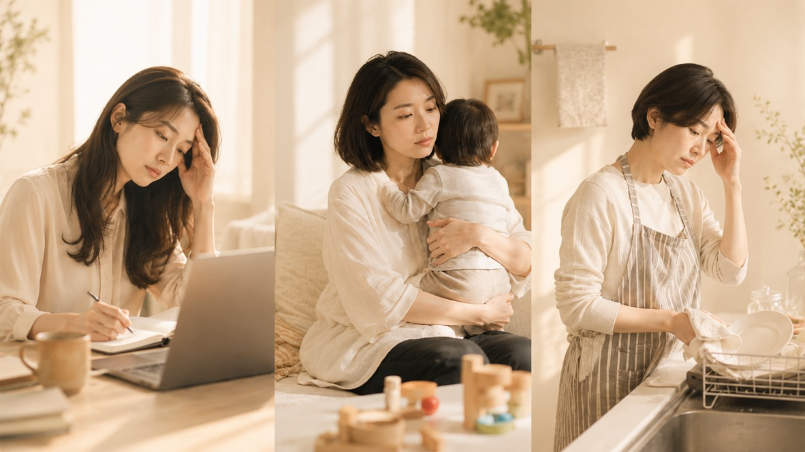
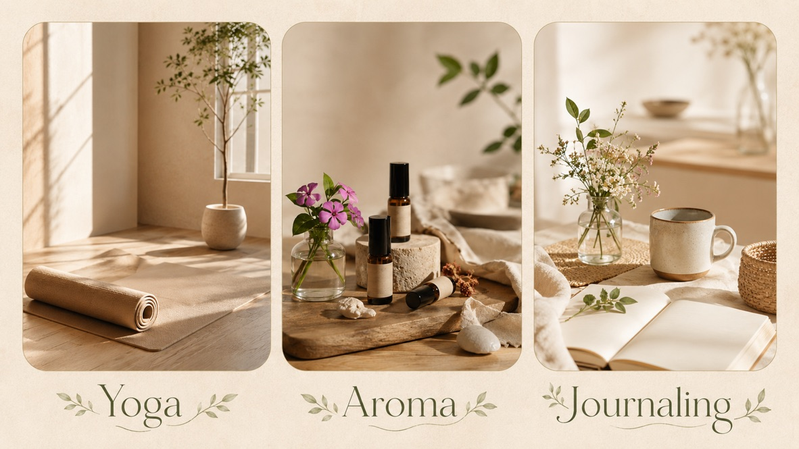
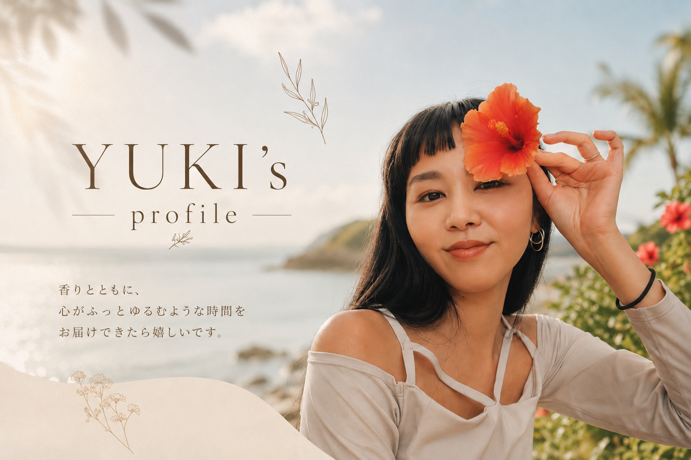
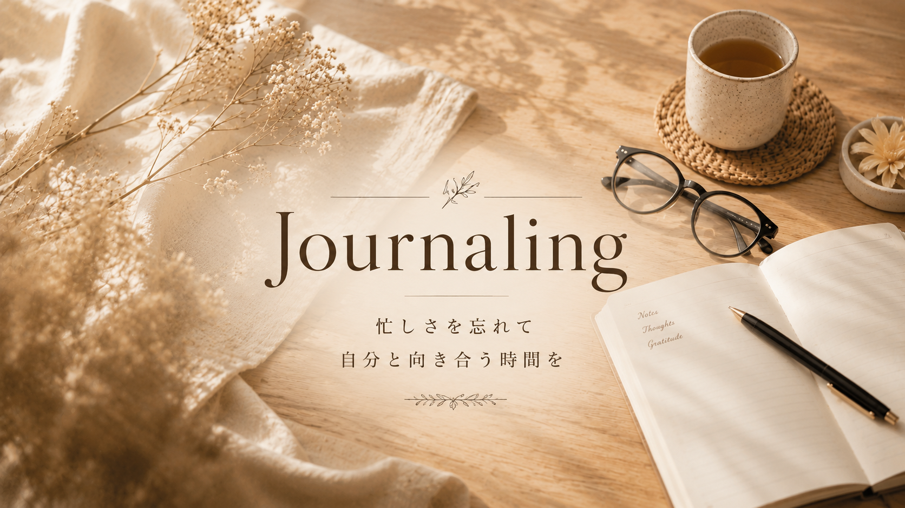

正解より、自分の感覚を大切にする
ヨガポーズも香りも、これが正解と決めつけず、今の自分がどう感じているかを大切にしています。
Yoga, Aroma, Okinawa living
ヨガ・香り・暮らしを通して、
ぶれてもまた自分の軸に戻れる場所を届けています。
暮らしの中に、呼吸する余白を。ポーズの正解や香りの効能にとらわれすぎず、「今日、私はどう感じる？」を大切にする時間を届けています。

Before breathing out
必要なのは、もっと頑張ることではなく、自分の感覚に戻るための小さな余白かもしれません。

Concept
YUKI YOGAが大切にしているのは、ポーズをきれいに完成させることだけではありません。
「今日どう感じる？」
「無理したくないなら、休んでいい」
「怖かったら、手をついていい」
「自分で選んでいい」
そんなふうに、自分の中の感覚を少しずつ取り戻していくヨガ。アロマも同じように、効能や正解にとらわれすぎるのではなく、日常の情景や心地よさを香りとして楽しむもの。
ヨガと香りを通して、頑張りすぎる女性がふっと緩み、自分の軸に戻れる時間を届けています。
What I value
ヨガポーズも香りも、これが正解と決めつけず、今の自分がどう感じているかを大切にしています。
無理に動くことより、呼吸や体の声に気づくこと。休むことも、自分で選ぶことも大切な時間です。
特別な日だけではなく、朝の呼吸、夜の香り、日々の余白の中にヨガとアロマがそっと寄り添うことを目指しています。
Service
料金や詳しい開催内容は、その時々で変わります。最新情報は、YUKI YOGA公式LINEでお知らせしています。

現在は、オンラインレッスンやグループレッスンを中心に、不定期で開催しています。体が硬くても、久しぶりのヨガでも大丈夫。
ポーズを正しく取ることよりも、今の自分の呼吸や感覚に気づくことを大切にしています。
レッスンやイベントの内容・料金は、その時々で変わります。最新の開催情報は、公式LINEでお知らせしています。

slow living for life は、ほっとする日常の情景を切り取って香りにしたアロマ・フレグランスブランドです。
夕暮れ時の沖縄を思わせる柑橘の香り。午後のお菓子とティータイムのようなバニラの香り。ヨガと瞑想の時間に寄り添う木の香り。
Creemaの販売サイト、またはInstagramのDMからご相談いただけます。

沖縄南部を中心に、イベント出店やワークショップを不定期で開催しています。ヨガで呼吸を整え、香りで心をほどいていく時間。
開催内容・料金・所要時間はイベントごとに異なります。最新情報は公式LINEでお知らせします。
Voice
無理なく、比べず、今の自分に戻れる時間として、ヨガやアロマの余韻を楽しんでくださっています。
体の硬さや腰の不安があり、ヨガに自信がなかったけれど、YUKIさんのヨガは無理なく参加できました。温かい声かけに心も軽くなり、終わった後もアロマの香りで余韻を楽しめました。
以前はヨガで周りに合わせるのがつらく、続けられませんでした。YUKIさんのレッスンでは、自然体で自分の体に向き合っていいと思えて、毎回心も体もリセットされています。
仕事のストレスや疲れが溜まっていた時に参加し、とてもリフレッシュできました。人と比べずに過ごせる温かい空間と、優しい声かけに癒されました。
初めてでも、体が硬くても、今の自分のままで大丈夫。ここは、頑張るためではなく、緩むための場所です。

Profile
YUKI
島暮らしのヨガをする人
slow living for life / アロマ・フレグランスデザイナー
学生の頃から海外に憧れ、オーストラリアでヨガと出会ったことをきっかけに、ヨガの言葉や、心がふっと軽くなる感覚に惹かれるように。
帰国後、自身も心身の不調を経験したことで、頑張りすぎている人が無理なく緩める時間を届けたいと思うようになりました。
現在は、沖縄での暮らしを大切にしながら、ヨガとアロマを日常に自然と取り入れる活動をしています。

Note
ヨガのこと、香りのこと、沖縄での暮らしのこと。日々の中で感じたことや、頑張りすぎる女性に届けたい言葉を、noteに綴っています。
LPでは伝えきれない想いや背景を知りたい方は、こちらからご覧ください。
公式noteを読む
Connect
レッスン情報、香りのこと、日々の想い。気になる場所から、気軽にのぞいてみてください。
Next step
レッスンやイベントは不定期開催です。料金や内容も、その時々の企画によって変わります。
気になる方は、まずは公式LINEに登録して、次のヨガレッスンやワークショップのお知らせをお待ちください。
無理に変わろうとしなくても大丈夫。呼吸を整えること。香りを感じること。少しだけ、自分のための余白をつくること。その小さな時間が、自分の軸に戻るきっかけになります。